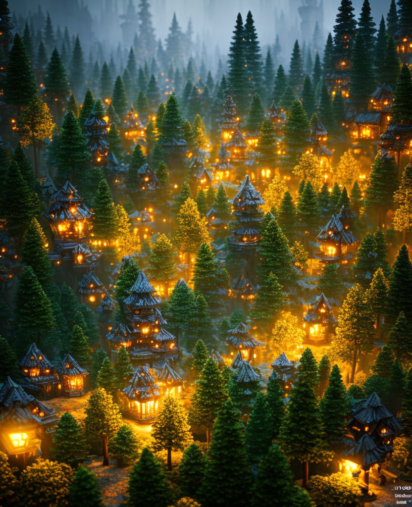

**Project Proposal**
Student Names: Arni Bjarnsteinsson and Gianluca Figini
# Motivational Image
_The woodland village scene, featuring houses shaped like pine trees, embodies the competition theme, "The more you look,"
as it is designed to make viewers explore its intricacies.
The dynamic lighting, facilitated by Homogeneous Volumetric Participating Media and Many Lights Sampling, adds depth to the scene, ensuring that the more viewers delve into the image, the more nuances and surprises they uncover._

Dan Quattrochi, Cozy Forest-dwelling village
_https://playgroundai.com/post/clf75omys06eps601hwyoxfse_ (18.11.23)
# Selected Features
## Student #1
Student Name: Árni Bjarnsteinsson
nethz: abjarnsteins
ID | Short Name |Points | Features (if required) & Comments
--------|---------------------------|-------|----------------------------------
15.4 | Homogeneous Volumetric Participating Media | 15 | -
15.1 | Disney BSDF | 15 | Color, Specular, Roughness, Metallic, Anisotropic, Subsurface
10.6 | Mip-Mapping for texture | 10 | -
10.1 | Low Discrepancy Sampling | 10 | -
5.8 | Simple Emitters | 5 | Spotlight
5.1 | Images as Textures | 5 | -
Total | | 60 |
To validate the homogeneous volumetric participating media, the spotlight and images as textures
I will render test scenes in nori and some rendering software and do a comparision
The reason I chose these paramaters for the disney bsdf is because we´ll need the color, specular and roughness for most materials and
on top of that we need the anisotropic for the tiles on the roofs and subsurface for the leaves, Then we can add some metallic materials
into the scene like lampposts which will benefit from the metallic property.
Then I will verify either using https://github.com/wdas/brdf or by doing an image comparison.
For the Mip-mapping I will verify by doing a performance comparison, with and without on top of a correctness check by an image comparison.
And finally for the Low discrepancy sampling I will both compute the D* discrepancy for the samples generated and compare the noise of some images
generated using a fixed amount of samples.
## Student #2
Student Name: Gianluca Figini
nethz: gfigini
ID | Short Name |Points | Features (if required) & Comments
--------|---------------------------|-------|----------------------------------
30.5 | Many lights sampling | 30 | -
10.5 | Resampled Importance Sampling (RIS) | 10 | -
5.18 | Modeling Meshes | 5 | -
5.17 | Rendering on the cluster | 5 | -
5.15 | Object instancing | 5 | -
5.5 | Intel's Open Image Denoise| 5 | -
Total | | 60 |
_To validate the many lights sampling, I will compareimages rendered with and without this addition. A wrong implementation of this feature is likely to create unwanted shadows and highlights. On the other hand, if the implementation was correct, we should observe a decreased level of noise in the final reder._
_Resampled Importance Sampling aims to reduce noise and improve convergence by allocating more samples to important regions. To validate this feature, I will compute the variance in the image, or in other simpler scenes. I expect this to be significantly smaller than in the case where RIS is not used. For some specific scenes, specialized test cases could be created._
During the feature selection process, we consulted with Rajesh, who proposed the idea of incorporating procedural generation for the meshes of trees and houses. Although this option is not currently listed among the potential features, I am interested in implementing it. I would appreciate it if you could confirm whether this is feasible and provide information on the point value associated with this addition. This will help me accurately update my list of features.
# Supplementary
* This report template uses [Markdeep](https://casual-effects.com/markdeep/), which supports Markdown syntax in HTML file. For example usage, please refer to the [official demo document](https://casual-effects.com/markdeep/features.md.html).
* LaTeX is also supported for typing mathematical formulas:
$$
L_o(\mathbf{x}, \omega_o) = \int_{\Omega} L_i(\mathbf{x},\omega_i)\, f(\mathbf{x}, \omega_i, \omega_o)\, |\cos\theta_i|\, \mathrm{d}\omega_i
$$